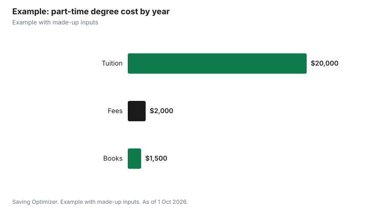

Education · Canada
Mature Student Admission to University in Canada: Rules and Costs

Most Canadian universities admit mature students without a recent high school average, but each school sets its own definition. York University, for example, considers you a mature student if you are at least 21 by the end of the calendar year you start, have been out of full-time high school for at least two years, and have attempted less than a full year of college or university. The University of Toronto's Academic Bridging Program at Woodsworth College takes students 19 and older who have been away from full-time study for two years, for a $98 application fee. UBC asks for at least four years outside full-time formal education. Many programs still require specific prerequisites, such as a Grade 12 math course, so check the program, not just the general rule.
Key takeaways
- York: 21 by year end, two years out of full-time high school, less than a year of postsecondary.
- U of T Academic Bridging: 19, two years away from full-time study, no prior bachelor's courses, $98 to apply.
- UBC: at least four years outside full-time formal education.
- Program prerequisites still apply in many cases.
- OUAC: $159 for three university choices in Ontario.
- Example with made-up inputs: a part-time path to a degree.
How definitions differ
| School | Age | Time away | Prior study |
|---|---|---|---|
| York University (mature student) | 21 by end of calendar year of admission | 2 years out of full-time high school | Attempted less than 1 full year at college or university |
| University of Toronto, Woodsworth Academic Bridging | 19 by first day of month program begins | 2 years away from full-time high school or college | No bachelor's-level courses attempted |
| University of British Columbia (mature applicants) | Not stated as an age | At least 4 years outside full-time formal education | Considered case by case |
York says meeting the minimum requirements does not guarantee admission, and for some programs it still lists high school prerequisites, such as Grade 12 Advanced Functions (MHF4U) for several business programs. U of T's bridging program is open to Canadian citizens, permanent residents, Convention refugees and protected persons, and it offers part-time and full-time options with one entry point a year. UBC says it looks for evidence of academic potential in achievements and life experience, and encourages applicants who have been outside full-time formal education for at least four years to apply.
What it costs to apply and start
- Application: in Ontario, OUAC charges $159 for three university program choices and $51 for each extra choice; U of T's bridging program has a $98 application fee.
- Prerequisites: if you lack a required course, you may need to take it first, through adult high school, continuing education or online courses.
- Tuition: once admitted, mature students generally pay the same tuition as other students in the program. Statistics Canada's preliminary average for Canadian undergraduates is $8,021 for 2026/2027, and $9,306 in Ontario.
- Part-time study: taking fewer courses lowers each term's bill and lets you keep working, but stretches the degree over more years.
Paying as an adult student
Adult students have funding options that younger students often do not. Government student aid includes part-time grants and support for students with dependants; see the related guides on part-time and dependant grants. If you have RRSP savings, the Lifelong Learning Plan lets you withdraw from your RRSP for full-time education and repay over time. If you are unemployed and receiving EI, ask Service Canada about approved training before you enrol, since going to school can affect EI. Tuition paid to an eligible institution can generate a tuition tax credit, and unused amounts can be carried forward. Employers sometimes reimburse courses, so ask HR.
Choosing between a bridging program and direct admission
A bridging or access program lets you take one or more first-year-level courses with academic support, and success can lead to admission to a degree. Direct mature admission skips that step but may require prerequisites. If you have been out of school for a long time or never finished high school math or English, a bridging course is a lower-risk way to test your readiness. If you already have the prerequisites, direct admission can save a term. Ask each school how bridging grades count toward your degree.
Getting credit for what you already know
Some schools grant transfer credit for college courses or recognize prior learning, which can shorten a degree and cut its cost. Ask the admissions office whether past college courses, professional certificates or workplace training could count, what documents you would need, and whether there is a fee for an assessment. Get any credit decision in writing before you plan your course sequence, and keep your old transcripts handy, since ordering them from a school you attended years ago can take time.
Practical tips for returning
- Start with one or two courses to rebuild study habits.
- Use the school's mature or adult student advising office.
- Look at evening, weekend and online sections if you work.
- Ask about credit for prior learning or college transfer credit.
- Plan your budget for each term, not just the first one.
- Tell family and your employer about your schedule, especially around exams.
- Check whether your school offers a reduced fee for part-time students on services you will not use.
Example with made-up inputs
These numbers are an example with made-up inputs. Sam, 32, works full time in Toronto and has not studied since high school. Sam applies through OUAC for $159, is admitted as a mature student and takes two courses a term in fall and winter. At a made-up $1,000 per half-year course, that is $4,000 a year, plus $400 in fees and $300 in books, $4,700 a year. Over five years Sam completes 20 courses toward the degree for about $23,500 in total, while keeping a full-time salary. How many courses a degree needs depends on the program, so Sam checks the degree requirements and plans to add summer courses if the timeline is too long. Studying full time would finish sooner but mean leaving work.
| Item | Per year | Five years |
|---|---|---|
| Tuition, 4 half-year courses | $4,000 | $20,000 |
| Fees | $400 | $2,000 |
| Books | $300 | $1,500 |
| Total | $4,700 | $23,500 |

Steps
- Read the mature student definition at each school you are considering.
- Check the specific program's prerequisites.
- Decide between bridging and direct admission.
- Apply through OUAC in Ontario, or directly to schools in other provinces.
- Apply for student aid, including part-time grants.
- Start with a manageable course load.
Common mistakes
- Assuming one school's age rule applies everywhere.
- Applying without required prerequisites.
- Taking a full course load while working full time.
- Not applying for part-time grants.
- Missing that EI rules apply if you are on EI.
Related: part-time student grants and the Lifelong Learning Plan.
Sources
- York University, Admission requirements for mature students, futurestudents.yorku.ca, as of 1 Oct 2026.
- University of Toronto, Woodsworth College, Academic Bridging Program eligibility and apply pages, wdw.utoronto.ca, as of 1 Oct 2026.
- University of British Columbia, Vancouver Academic Calendar, Mature Applicants, vancouver.calendar.ubc.ca, as of 1 Oct 2026.
- Ontario Universities' Application Centre, Undergraduate Fees (updated 1 Oct 2026); Statistics Canada, Table 37-10-0045-01, as of 1 Oct 2026.
- Course prices and totals in the example are made-up inputs.
Frequently asked questions
What is a mature student in Canada?
It depends on the school. York requires age 21 by year end and two years out of full-time high school; UBC asks for four years outside full-time formal education.
Can I go to university without a high school diploma as an adult?
Often yes, through mature admission or a bridging program, but many programs still require specific prerequisite courses.
What is the U of T Academic Bridging Program?
A Woodsworth College program for students 19 and older who have been away from full-time study for two years and have not attempted bachelor's-level courses. The application fee is $98.
Do mature students pay different tuition?
Once admitted, they generally pay the program's regular tuition. The preliminary 2026/2027 average for Canadian undergraduates is $8,021.
How do I apply as a mature student in Ontario?
Through OUAC, which charges $159 for three program choices and $51 per extra choice.
Can mature students get OSAP or grants?
Yes, if they qualify. Government aid includes part-time grants and grants for students with dependants.
Researched and drafted with AI assistance and fact-checked against official Canadian sources. How we create content.
Disclosure: Saving Optimizer may earn a commission if a partner link is added later. No partnership is claimed on this page. Education only.